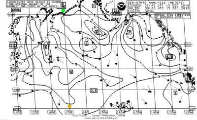

JWX (version) Help
JWX (version) Help
JWX is Copyright © 2011, P. Lutus.
JWX is Copyright © 2011, P. Lutus.
JWX is released under the GPL: http://www.gnu.org/licenses/gpl.html
Please visit http://www.arachnoid.com/JWX for more documentation and to acquire the latest version of JWX.
NOTE: For formatting reasons, users may want to temporarily make the JWX program frame larger to properly read these instructions.
Introduction | Radio Receiver | Initial Setup
Calibration | Audio Issues | In Depth
Technical | Version History | Resources
Introduction
Figure 1: JWX in operationRadio Receiver
Figure 2: Printing a weather chart while underway
during my solo circumnavigation, 1988-1991For the benefit of those who need marine weather information but are unable to access the Internet, the U.S. National Weather Service provides weather charts by way of shortwave radio. This service, variously called "weatherfax" or "HF radiofax", has worldwide coverage (other countries have similar services) and is ideal for ships at sea or anyone in a remote location. The service transmits daily marine weather summaries and forecasts, including satellite cloud cover images, wave heights, wind velocities and much more.
During my around-the-world solo sail I received weather charts using the setup shown in Figure 2 on this page — a shortwave receiver, a fax demodulator box, a laptop, and a printer to render the charts. By modern standards this arrangement was quite terrible and a frequent waste of paper — the receiver might not be tuned correctly, or a certain oscillator might be out of alignment, or reception wasn't good enough — and my first warning would be a scrambled or unreadable paper chart. Because I was often more than a thousand miles from the nearest patch of dry land, wasting printer paper was especially annoying.
It's many years later and I still venture across oceans (mostly in Alaska territory) and I still need the National Weather Service's weatherfax charts. Over the years I've made some changes, for example I began turning the weather chart data stream into a graphic image instead of sending it to a printer. But until this project I continued to rely on the original fax demodulator box to process the shortwave receiver's signals and turn them into a chart. I also looked into other, newer demodulator hardware, thinking some of the problems might have been solved in the twenty years since the original box was designed. But the newer fax demodulators I tested had all the same problems — difficult setup, inability to stay in alignment, poor performance, no gray scale, and (inevitably) software that only ran under Windows.
Figure 3: JWX locally-generated grayscale test imageRecently, in frustration, I decided to try creating a weatherfax demodulator/receiver entirely in software — no demodulator box, no printer, just a shortwave receiver attached to the computer's sound card. This strategy is only possible because computers are much faster, and sound cards more sophisticated, than they were a few years ago. My project was a complete success, and JWX is the result.
To use JWX, you need:
- A computer running either Linux or Windows, with Java installed.
- A good-quality shortwave radio, able to tune the range 2 - 25 MHz, with a single-sideband mode.
- An audio patch cord to connect the receiver to your computer's sound card line (or microphone) input.
That's all — nothing else is needed.
Initial SetupNot all shortwave radios are created equal, and there are many very bad shortwave radios available. The best choice for fax reception is a stable, digital radio with the ability to tune and display frequencies with a resolution of less than one kilohertz. There are many suitable radios and I don't normally recommend a particular manufacturer's radio, but I can't resist saying if you got your shortwave radio at Radio Shack, chances are it's not suitable, but if the radio is made by Icom, chances are it's more than good enough. There are many receivers between these extremes, and most will produce acceptable results.
A typical reception setup consists of a radio, an external antenna connected to the radio with a coaxial cable (to shield against computer interference), and a computer with a sound card. A portable shortwave radio using its own whip antenna will probably not work if it's near the computer, because the computer's logic circuits create too much radio noise in the frequency band of interest.
Weatherfax transmitting stations use a special FM mode that allows them to transmit what amounts to a TV picture, but at a much slower rate than TV (transmitting a complete weather chart typically requires ten minutes). This slower rate allows reasonable-quality images to be broadcast over thousands of miles even in the presence of interference and fading.
The most up-to-date information about U.S. weatherfax schedules and frequencies is available at the National Weather Service marine weather site, but here is a recent list of U.S. transmission locations and frequencies (Winter 2010-2011):
- Boston, MA (NMF) 4235(02z, 08z), 6340.5, 9110, 12750(14z) kHz
- New Orleans, LA (NMG) 4317.9, 8503.9, 12789.9, 17146.4(12,18Z) kHz
- Kodiak, AK (NOJ) 2054(10z, 18z), 4298, 8459, 12412.5(4z, 22z) kHz
- Pt.Reyes, CA (NMC) 4346(except 19z,23Z), 8682, 12786, 17151.2, 22527(19z,23Z) kHz
- Honolulu, HI (KVM70) 9982.5(0519-1556z), 11090, 16135(1719-0356z) kHz
To receive a weatherfax station, one tunes 1.9 KHz below the station's published frequency and selects upper-sideband mode. For example, to receive the Pt. Reyes 4346 KHz broadcast, tune to 4344.1 KHz.
Calibration
- Use an audio patch cord to connect your shortwave receiver's output to your computer's line-input or microphone-input jack.
- Adjust the shortwave receiver's volume control for normal output levels (the nature of the signal is not important at this stage).
- Use your computer's audio controls to produce a normal audio level as shown on the JWX audio level indicator.
- If you encounter difficulties acquiring adequate sound levels, try selecting a different sound source — use the audio source selector to the left of the "Monitor" checkbox:
- Click "Standby".
- Use the source selector to choose a different source — most operating systems have two sources.
- Click "Receive."
- Note the sound level on the "Audio" indicator.

Figure 4: Uncalibrated JWX reception exampleAudio IssuesIn most ways, radiofax reception is a simple matter of decoding tones and constructing an image, but there is one exception — the radiofax protocol requires a very high degree of time synchronization between sender and receiver. To receive charts that are not diagonally out of alignment requires a clock synchronization accuracy of about one part in a million, much better accuracy than computer clocks tend to have.
JWX has a method to correct for clock errors, and it includes a simple calibration procedure to synchronize your computer's clock with a radiofax transmitter. To adjust your computer's timing, follow this procedure:
- Tune in some radiofax transmissions using the above instructions, and let JWX decode them.
- If you tune in a fax transmission that is already underway and want to receive a partial chart, just click the "Lock" button to force JWX to commence reception without horizontal synchronization.
- After receiving a chart, you will almost certainly notice that vertical lines aren't actually vertical, as shown in Figure 4.
- To begin the calibration precedure, point your mouse cursor at a vertical feature of the received chart and press the right mouse button (Figure 4, green dot).
- After one mouse press, JWX will display a colored label saying that the calibration procedure has begun.
- Now point your mouse cursor at the opposite end of the same vertical feature and press the right mouse button again (Figure 4, orange dot).
- JWX will now ask some questions:
- To the question
, reply "Yes."
- To the question , reply "Yes" also.
- If you have pointed your mouse cursor carefully, the meant-to-be vertical features in your image will become truly vertical. If they aren't quite right, just repeat the above procedure (using the same chart) and fine-tune the result to your satisfaction. In subsequent refinements, when a nonzero calibration value appears in the calibration number window, JWX will ask one more question:
- To the question , reply "Add."
Figure 5: Calibrated JWX reception example- The above calibration procedure can be repeated until you are satisfied with the results. After it is complete, subsequent charts will be automatically corrected as they are received.
- The position and order of your calibration clicks don't really matter — you can start at the bottom of the image and then move to the top if you choose. The only requirement is that the two clicks be aligned with the same vertical feature.
- Enabling the "Full Scale" image mode makes it easier to accurately position the mouse cursor on vertical features.
- Because each computer's clock is different, each computer that runs JWX will need a separate calibration and will produce a unique calibration value.
- For future reference it is a good idea to write down the calibration number that appears in the calibration window after the above procedure. This makes it possible to simply type in a valid calibration number in the event that the original value is lost or inadvertently changed.
In DepthWhile developing JWX I became aware that modern computer sound systems are not as simple as they could be. In the original design I opened default input and output sound channels, hoping the operating system would figure out what to do, but this turned out to be naïve. Current JWX versions have sound channel selectors for both input and output (located to the right of the green machine state display).
If the user is very lucky, choosing the first available input and output sound channels will provide satisfactory performance. But this won't always be true, and JWX locates and provides all available input and output channels for maximum flexibility.
- For both input and output channels, a description of the channel is displayed as a tooltip over the selection box. When you change channels, the tooltip description changes in step. This helps greatly in sorting out audio problems.
- To choose a different input channel, press "Standby," select from the list adjacent to the label "In:", then press "Receive". This step sometimes improves signal levels or reduces interference from other sound sources.
- To choose a different output chanel, select from the list adjacent to the label "Out:" at any time.
- If a particular output channel selection causes feedback or image distortion, choose a different channel or disable the output by setting the volume level to 0.
- Remember that the output channel is only meant to allow the user to directly monitor the weatherfax broadcast audio. If you can already monitor it by some other means, disable this channel by setting the volume level to 0. This eases the computation burden and may also prevent signal distortion.
TechnicalAutomatic Reception
Once the above-described calibration procedure is complete, you can simply let JWX run unattended and collect weather charts — just click the "Receive" button. To be sure that JWX is ready to receive charts, check that there is a label at the lower center of the JWX display saying Receive | WAITSIG or Receive | WAITSTB and the incoming audio level is acceptable.
- If connected to a shortwave radio, JWX will automatically receive and store weather charts in a directory it creates, located at (user home directory)/.JWX/charts.
- Each chart is distinctly time-stamped so that, even after being copied to a different location, you can determine when it was received and correlate charts with the broadcast schedule of the radiofax station you have chosen.
Unsynchronized Charts
Figure 6: Unsynchronized chartAs mentioned earlier, if you tune in a radiofax broadcast that is underway and you want to receive a partial chart, simply click the "Lock" button to force JWX to begin reception without synchronization. This will probably produce a chart as shown in Figure 6 — a perfectly good chart, but not synchronized. To correct such a chart, simply point your mouse cursor at the location of the green dot in Figure 6 and press the left mouse button. This will resynchronize the chart, either as it is received or later.
Remember these points:
- To force reception of a chart without synchronization, click "Lock."
- To horizontally realign a chart, point the mouse cursor at the point on the chart that should be located at the edge, and press the left mouse button. This action can be performed repeatedly without losing any chart data.
- After chart reception, to commence the calibration procedure described above, press the right mouse button.
- You may also begin the calibration procedure by pressing the "Calibrate" button, then pointing the mouse cursor and pressing the right mouse button as described above, or you may type a calibration value into the calibration number window.
Figure 7: JWX locally-generated
grayscale test patternGrayscale
A typical radiofax decoder only produces monochrome charts, but weatherfax services now transmit satellite cloud-cover images and other charts that are better received by a decoder able to resolve shades of gray. Because JWX supports grayscale and because this improves the quality of almost all received charts, it's recommended to leave grayscale mode enabled in most circumstances.
Data Conversion Rate
- JWX uses your computer's sound card, essentially an analog-to-digital converter built into most modern personal computers, to convert the signal information from your shortwave receiver.
- Your sound card has a selection of data conversion rates for different purposes, and JWX lets you choose an appropriate data rate (lower left, "Data Rate") while JWX is in standby mode.
- As the data conversion rate increases, so does the quality of the images, but your computer's workload increases as well.
- Because of bandwidth limits imposed by typical shortwave receivers, optimal weather charts can be decoded using relatively low data conversion rates (i.e. 10,000 or 20,000 samples per second) and higher rates won't necessarily improve the results.
- To free your computer from an unnecessary processing burden, choose the lowest data conversion rate that produces the chart quality you require. An excessively high data conversion rate may slow your computer down or even prevent it from staying in synchronization with incoming chart data.
Weak-Signal Problems and Solutions
Shortwave radio reception varies greatly in quality, and there will be times when received signals are marginal. JWX has been designed to accommodate varying signal levels and noisy conditions, but there are some adjustments and practices that can increase the probability of successful chart reception:
Figure 8: On-air JWX satellite cloud cover image
- Try changing frequencies. Each of the U.S. weatherfax tranmitting stations operates on multiple frequencies, and changing atmospheric conditions favor different frequencies at different times of day and different seasons. With a modern digital shortwave radio and with multiple operating frequencies stored in the receiver's memory, changing frequencies on the fly won't significantly interfere with an ongoing chart reception.
- Adjust the JWX "Threshold" setting, the sensitivity control for start/stop tone detection:
- If JWX doesn't respond to the 300 Hz fax start tone (see below), decrease the threshold setting.
- If JWX stops reception prematurely before a chart has been fully received and returns to the wait state, increase the threshold setting.
- In most cases, a threshold setting between 20% and 50% will produce the best results.
- Try improving the antenna installation. The ideal antenna for fax reception is one well-separated from the receiver and computer, and the feed line between the antenna and the receiver should be by way of a coaxial cable to provide shielding against computer noise.
Using an Audio Recorder
When sailing where weatherfax signals are weak, I sometimes turn off the computer (to reduce interference) and use a small solid-state audio recorder to record a series of weather chart transmissions in advance. After all the charts are recorded, I turn on the computer and play the recording into the computer instead of directly connecting the receiver. This greatly reduces interference created by the computer itself.
Version History
Figure 9: Radiofax FM Signal DiagramRadiofax Protocol
Radiofax transmission uses a mode formally described as Frequency-Shift Keying (FSK or F3C), but the grayscale capability implies something more like frequency modulation (FM), in which any intermediate level may be included in the data stream.
The nominal deviation from a radiofax station's assigned carrier frequency is ± 400 Hz as shown in Figure 9. For a receiver tuned 1.9 KHz below the assigned carrier frequency, the black level is 1500 Hz, gray 1900 Hz and white 2300 Hz. Grayscale data can produce any level intermediate between the black and white extremes.
There are two special modulation frequencies — 300 Hz for 5 seconds marks the start of a fax broadcast, and 450 Hz for 5 seconds marks the end.Because of the importance of weatherfax to international shipping and general boating, and because of the wide adoption of digital radios, there have been a number of changes to the protocol over the years, and there are some variations in detail from country to country.
This table shows the stages and timings in the broadcast of a radio fax:
Name Description Time Comment Tune White level (2300 Hz) to allow receiver tuning 60 seconds This seems to have been abandoned or curtailed in many places because modern digital radios don't require manual tuning. Start Tone 300 Hz start tone 5 seconds This tone marks the beginning of the fax sequence. Synchronization 40 lines consisting of 25 milliseconds of white level and 475 milliseconds of black level. 20 seconds This sequence allows the receiver to acquire horizontal synchronization. Some non-U.S. locales use 60 lines/30 seconds. Image data Each line consists of 25 milliseconds of white level and 475 milliseconds of image data. Two lines per second, with a duration determined by image size. Some charts are rotated 90° to allow a wider format than the default orientation allows. JWX can reorient these charts after reception. Stop 450 Hz stop tone 5 seconds This marks the end of the fax transmission. Tail Black level (1500 Hz) 10 seconds This feature is not always present. JWX State Machine
JWX tracks the incoming fax signal using a state machine that approximately corresponds to the temporal sequence of the fax signal itself. JWX shows the present state of its state machine at the lower center of the display, like this: Receive | WAITSIG . Here are the JWX state machine states and explanations:
Name Description Time Comment WAITSIG Wait for an audio signal Indefinite Initial state when no input signal is present. WAITSTB Wait for beginning of 300 Hz start tone Indefinite Audio is present, monitoring for start tone. WAITSTE Wait for end of 300 Hz start tone 5 seconds Start tone is present, wait for end of tone. WAITLS1 Wait for local line beginning Less than 1/2 second Local synchronization with line rate. SYNC Horizontal synchronization interval 20 seconds (U.S.) Acquire correction value to horizontally synchronize with transmitter. WAITLS2 Wait for local line beginning Less than 1/2 second Adjust local line beginning to correspond to correction value acquired during SYNC. PROC Process image lines, monitor for 450 Hz end tone Duration of image Acquire image scan lines and assemble into graphic image, listen for 450 Hz end tone. END End of sequence Brief Halt reception, save assembled image to disk, return to WAITSIG state. Start/Stop Tone Detection
Figure 10: JWX start tone responseA classic weakness in conventional radiofax receivers is reliable detection of the 300 Hz start and 450 Hz stop tones. Often a receiver will fail to detect a start tone and miss a chart, or will fail to detect a stop tone and continue receiving after the chart is complete. Efforts to solve these problems often result in detection of nonexistent start or stop tones.
In conventional electronic receiver designs (i.e. "hardware radios") it is extraordinarily difficult to create a tone detector that is sufficiently selective and stable without adding unacceptable cost and complexity to the design. But in software radios like JWX, such problems are easily solved by adding a few lines of code.
To detect the fax start and stop tones, JWX uses a special kind of DFT (Discrete Fourier Transform) meant to detect just one frequency with very high selectivity. Called the "Goertzel Algorithm", this method is ideal for fax tone detection — it is simple and can be made very selective, meaning it isn't likely to confuse image data or noise, and a legitimate tone.
In tests using on-air signals, and with some adjustment of the tone-detection threshold setting described above, this detection method has more than proved itself, often successfully detecting start and stop tones in the presence of so much radio noise and interference that the received chart was itself barely readable.
Clock Calibration
The value in the JWX clock calibration window corresponds to an absolute clock error in this way:
v = 1 - a/bWhere:
- v = JWX clock correction number
- a = Local clock rate
- b = Remote clock rate
This equation can be used to directly produce a correction number for known clock error rates without requiring the clock calibration procedure.
Resources
- 02-28-2013 Version 2.8. Changed chart storage directory to (user home directory)/.JWX/charts, to keep from inadvertently deleting the initialization file located at (user home directory)/.JWX/JWX.ini.
- 07-05-2012 Version 2.7. Added a feature to delete old charts, fixed a bug that prevented automatic chart saving on exit.
- 04-11-2011 Version 2.6. Changed the output image width to 1810 pixels for consistency with weatherfax standards.
- 03-26-2011 Version 2.5. Fixed a couple of small bugs, adjusted the phase-locked loop for better fidelity.
- 03-25-2011 Version 2.4. Fine-tuned the PLL's parameters to better fit the nature of the Radiofax signal.
- 03-24-2011 Version 2.3. Replaced existing FM detection scheme with a phase-locked loop for a big improvement in image quality.
- 03-16-2011 Version 2.2. Recoded the FM detector scheme to take advantage of my experience designing JNX, which also needed to detect FM in much the same way. The result is much better image appearance at low data rates. Had to abandon the automatic frequency control feature, which never worked very well anyway.
- 03-16-2011 Version 2.1. Fixed a threshold-sense bug that crept in during a number of recent small changes.
- 03-02-2011 Version 2.0. Added a button that closes all inactive charts at once.
- 02-27-2011 Version 1.9. Detected and adapted to a system audio-stream error that only appears after 4 1/2 hours of continuous operation.
- 02-25-2011 Version 1.8. Corrected a coding error that would cause problems in a continuous multi-day run, fixed a number of other small bugs.
- 02-24-2011 Version 1.7. Recoded the audio input/output channel access scheme to show descriptions of the channels as tooltips over the selection lists. This helps in sorting out which inputs and outputs have been selected.
- 02-24-2011 Version 1.6. Corrected a thread-related bug that, on certain Java runtime engines, used up too much processor time.
- 02-23-2011 Version 1.5. Performed more optimizations, cleaned up some code sections and fixed a handful of small bugs.
- 02-22-2011 Version 1.4. Reworked the audio channel configuration scheme for more operational flexibility.
- 02-21-2011 Version 1.3. Performed some time and memory usage optimizations on critical code sections.
- 02-20-2011 Version 1.2. Made a number of interface improvements and refactored the signal-handling sections.
- 02-19-2011 Version 1.1. Fixed a number of small bugs and optimized some critical sections.
- 02-18-2011 Version 1.0. Initial Public Release.
Here are some JWX-related resource locations specific to your system:
JWX Home Page http://arachnoid.com/JWX JWX version (version) User home directory (user home directory) JWX data directory location (data path) JWX chart directory location (chart path) JWX configuration file location (configuration path) Currently running JWX application location (application path)